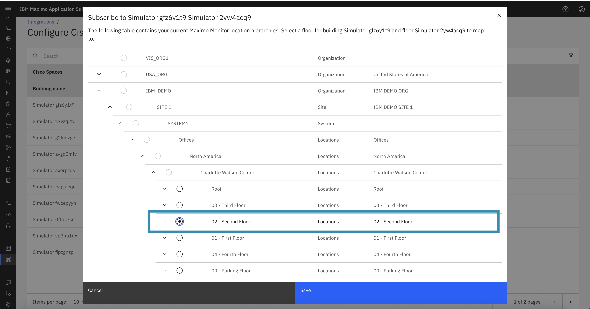

Subscribe to Cisco Spaces Location
In this guide, we will walk through the process of subscribing a Cisco Spaces location in IBM MAS Monitor. Subscribing a location links the Cisco Spaces location with an MREF floor, allowing MAS Monitor to begin tracking and visualizing user presence , user movement and other metrics for that area.
Step 1: Open the Actions Menu
Navigate to the list of Cisco Spaces locations in MAS Monitor.
- On the rightmost side of the location entry, click the ellipsis (⋮) button to open the actions menu.
- You will see an option labeled Subscribe.

Step 2: Click on Subscribe
- Click the Subscribe button from the menu.
- A popup will appear asking you to associate the Cisco Spaces location with a corresponding MREF building floor.
Note
Cisco Spaces locations must always be subscribed with an MREF Building Floor.

Step 3: Confirm Subscription
Once the location is successfully subscribed:
- The Status column will change from
UnsubscribedtoSubscribed. - The Floor Name column will be populated with the name of the floor the location is mapped to.
- The floor name is a clickable link that navigates directly to the Locations page within MAS Monitor.

Step 4: View Updated Actions
Now that the location is subscribed, clicking the ellipsis (⋮) menu will show two new options:
- Unsubscribe
- Edit Offset and Measurement
These actions allow further control over the location mapping and coordinate adjustment.

Step 5: Edit Offset and Measurement
Selecting Edit Offset and Measurement opens a dialog box where you can:
- Set X-Offset and Y-Offset values to coordinate the alignment of the location on the floor map.
- Choose the Unit of Measurement, which can be either:
- Inches
- Millimeters
These offsets will be reflected as dimensions in the location data.


Step 6: Verify
- Once your edits are saved, the X/Y Offset values will be displayed in the corresponding columns of the location table.
- The Unit of Measurement will also be updated accordingly.